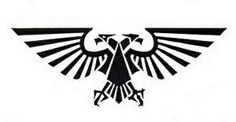
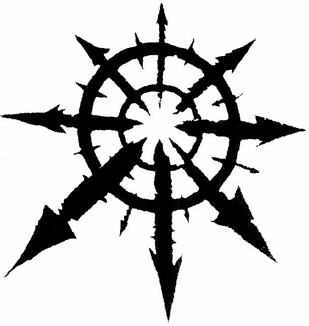
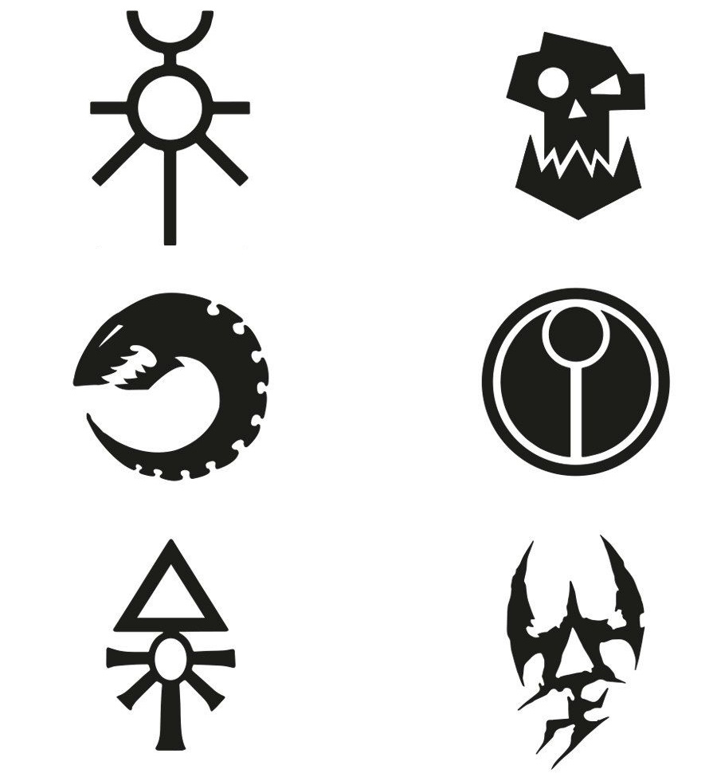

Explore the Lore: The Universe of Kill Team
Uncover the stories behind your warriors and the factions that shape the Warhammer 40,000 universe.
In the grim darkness of the far future, there is only war. The galaxy is a battleground of endless conflict, where every faction fights for survival, power, or divine purpose. Kill Team focuses on the elite squads sent to achieve critical objectives in this vast and dangerous universe.
What makes your individual games unique can vary from dice rolls and strategy, and with the regularly growing collection of recognized teams, there are hundreds of new stories you can create, by battling another player or fighting against pre-planned waves with a friend, there is a Kill Team for every player, and volumes of information about the world they represent.
The Imperium of Man
Humanity is divided into a multitude of factions, either working for or against the overall interests of Mankind in its attempts to retain control over the galaxy and survive unscathed in an incredibly hostile universe. However, the vast majority of Humans live under the authoritarian rule of the theocratic, interstellar empire known as the Imperium of Man.
With the widest variety of tactical assets a psychicly-enhanced and genetically modified superhuman may find themselves in possession of, the Human Kill Teams are the most numerous, doing anything to acheive victory at the cost of countless lives, as victory in death is victory, but failure is heresy unbecoming of your entire squadron.
Forces of Chaos
Chaos, also known to its servants as the Primordial Truth or the Primordial Annihilator, and to the Imperium of Man as the Archenemy, is a metaphysical, psychic force embodied by the malevolent entities comprised of emotional energy that exist in the psychic realm called the Immaterium.
Truly tied to their theme, Chaos Kill Teams host daemons, cultists, and even even the traitors of mankind. These teams use their dark gifts to spread disorder and ruin throughout the universe and the battlefield.
The Xeno Threat
The main starfaring, intelligent xenos species in the Milky Way Galaxy are the Necrons, Orks, Tyranids, T'au, Craftworld Aeldari,and Drukhari, though there are countless other intelligent alien species, most of them hostile, that Mankind has encountered over the long millennia of its expansion across the stars.
Each of these races are represented by various Kill Teams, most of them having more than one. These Kill Teams boast models that would shock and the average passerby, and host stories that would do the same.
